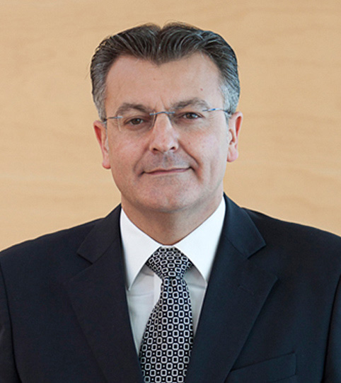

ДОБРО ПОЖАЛОВАТЬ
САНТЬЯГО ТАДЕО, президент Островного Совета Менорки
Добро пожаловать на Менорку – биосферный заповедник и единственный в своем роде остров, жители которого обладают богатым наследием многих цивилизаций: мегалитической, римской, вандальской, византийской, мусульманской и христианской, существующих на нем со времен завоевания 1287 года до наших дней. За это время Менорка успела побывать под властью Великобритании и Франции, оставивших свой отпечаток в нашем языке, архитектуре и традициях.
На этих страницах вы найдете следы завоевателей и переселенцев, придающие нашей территории уникальность и неподражаемое разнообразие. Менорка 100 Х 100 подробно рассматривает все богатство и экологическое равновесие острова, сохранившиеся на нем ремесла, производство обуви, бижутерии, продукции сельского хозяйства – отрасли, имеющие большое значение для развития нашей экономики.
Приглашаю вас насладиться нашими пляжами, нашей природой, нашим спокойствием, нашей кухней, нашими прекрасными лошадьми, нашими праздниками и нашей культурой. Одним словом, предлагаю вам самим узнать и получить удовольствие от каждого из сокровищ, которые таит в себе наша земля.